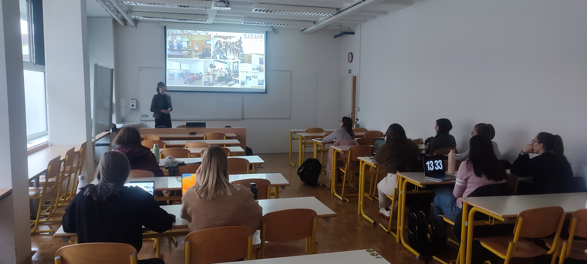
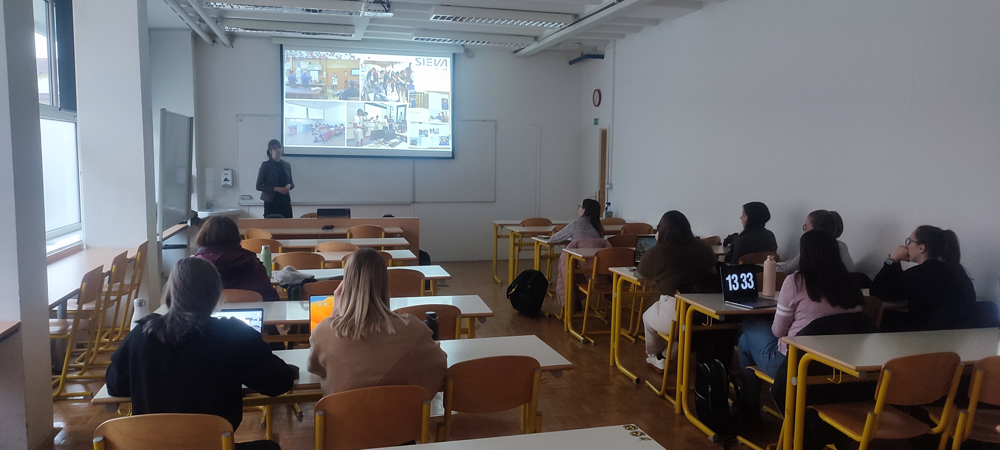
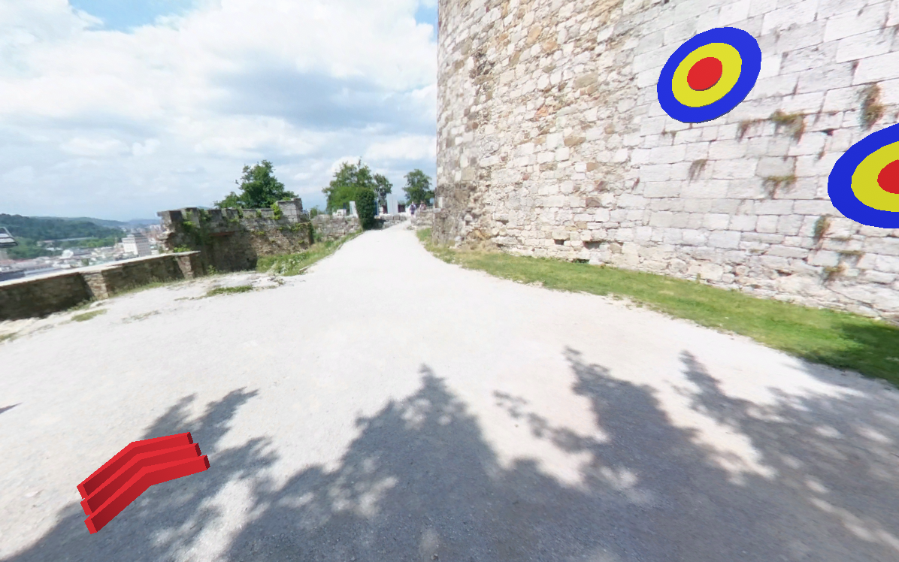
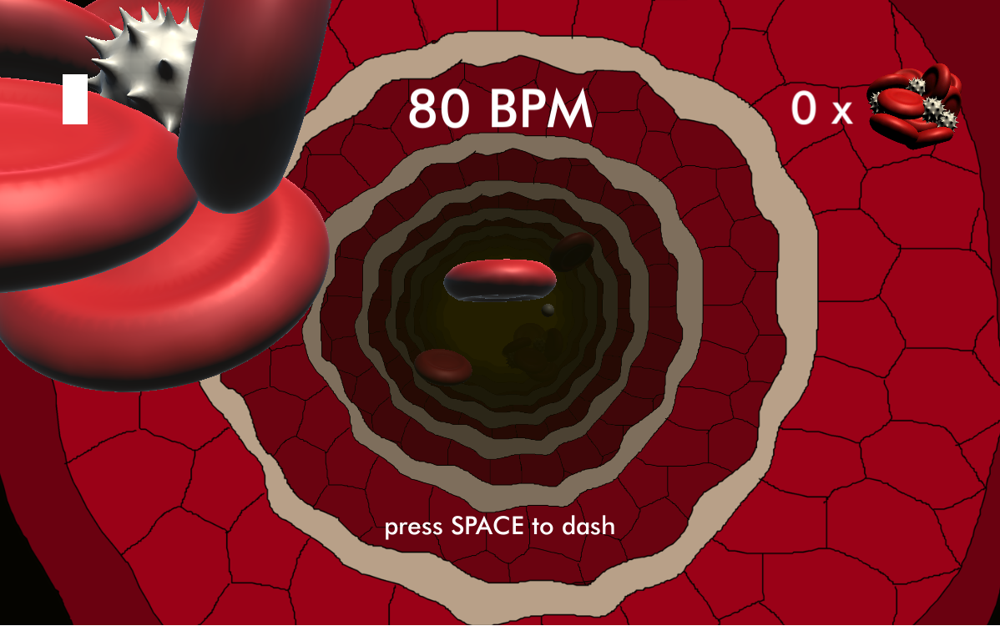

PORTFELJ
Magistrska naloga z naslovom Navidezna resničnost v avtomobilski industriji
Magistrska naloga je sestavljena iz dveh delov. Prvi del vsebuje celostni pregled VR tehnologij s poudarkom na področju avtomobilske industrije, v drugem delu pa je povzet praktičen razvoj treh VR aplikacij, ki pokrivajo različne elemente v proizvodnem in poslovnem procesu.
Razvite so v igralnem pogonu Unity, kompatibilne pa so z VR očali Valve Index:
aplikacija treninga požarne varnosti (inspiracija so vgrajeni senzorji sile v držalu VR ročke, ki zaznavajo silo stiska),
aplikacija vstavljanja krogličnih ležajev v U profil z uporabo ročne stiskalnice kot primer aplikacije za simulacijo proizvodnih procesov in usposabljanje delavcev,
aplikacija postavitve novega delovnega mesta in oceno njegove ergonomije za olajšanje dela konstrukterjev.
Organizatorka in izvajalka 5-dnevne delavnice "Virtualno=zabavno" v sklopu Poletnega tabora inovativnih tehnologij na Fakulteti za elektrotehniko
V letih 2021 in 2022 sem organizirala in izvedla 5-dnevno delavnico za osnovnošolce in srednješolce na temo tehnologij razširjene resničnosti in programiranja XR iger. Udeleženci so prek predavanj, testiranja več vrst pametnih očal (Oculus Quest 2, Hololens 2, Valve Index, ...) in s praktičnim projektnim delom na računalniku osvojili:
osnove XR in 360° tehnologije,
osnove razvoja v igralnem pogonu Unity,
uporabo programskega orodja Vuforia.
Več o vsebini delavnic najdete pod zavihkom GRADIVO.
Udeleženci so razvijali enostavno AR igro, kjer so morali postaviti dve sceni; začetno, kjer uporabnik izbere izgled svojega igralca, in sceno, kjer se igro dejansko igra. Pri tem je bilo potrebno implementirati logiko za izbiro igralca, prehod med scenami, implementirati premikanje igralca, gumbe, uporabiti in implementirati logiko za že izdelane animacije (Mixamo in animacije, ki so prišle skupaj s 3D modeli) in narediti lastno animacijo za vrtenje zlatnika in odpiranje ter zapiranje skrinje. Implementirati so morali štetje točk in odštevalnik časa, ki je določeval konec igre.
Udeleženci so razvijali enostavno VR igro, kjer so morali postaviti sceno s tarčami in delujočim strelnim orožjem. Tarče so lahko tudi animirali in dodali sistem delcev, ki se je aktiviral ob zadetku v tarčo. Implementirati so morali tudi odštevalnik časa, ki je določeval konec igre.
Predavateljica na vabljenih predavanjih in vajah na Fakulteti za elektrotehniko (FE) ter Naravoslovnotehniški fakulteti (NTF)
V letu 2022 sem na NTF izvedla vabljeno predavanje o osnovah XR tehnologij in primeri uporabe v avtomobilski industriji, v letih 2021 in 2022 pa vodila vaje pri predmetu Navidezna reničnost na FE, kjer so se študentje v dveh urah spoznali z osnovami XR tehnologij, primeri uporabe XR v avtomobilski industriji in v
igralnem pogonu Unity sprogramirali lastno MR aplikacijo, kompatibilno s Hololens 2 pametnimi očali. Pri tem so uporabili MRTK programski vtičnik. V obeh primerih so imeli študentje možnost preizkusiti nekaj kosov XR strojne opreme.
Več o pripravljeni MR delavnici najdete pod zavihkom GRADIVO.
 

Vodja Laboratorija za digitalne tehnologije pri SiEVA d.o.o.
Fokus laboratorija so tehnologije razširjene resničnosti (XR), kamor sodijo navidezna (VR), obogatena (AR) in mešana resničnost (MR).
Cilj je spodbujati in pomagati slovenskim podjetjem iz avtomobilske industrije pri uvajanju XR tehnologij v njihove delovne in proizvodne procese.
Pri svojem delu sem zadolžena za:
testiranjem XR strojne in programske opreme,
izdelavo demonstracijskih XR aplikacij,
pomoč pri uvajanju XR tehnologij v podjetja,
svetovanje in izdelavo študij izvedljivosti,
povezovanje s fakultetami, ponudniki strojne in programske opreme,
projektno vodenje,
nabavo opreme,
vodenje socialnih omrežij,
sodelovanje pri mednarodnih projektih (npr. Interreg ITA-SLO Techmology),
...


Demo Android aplikacija (izdelana v Android Studiu) kompatibilna s pametnimi očali RealWear za pomoč proizvodnim delavcem. Aplikacija vodi uporabnika korak za korakom skozi delovni postopek in mu omogoča dostop do bolj podrobnih navodil ali povezavo z bolj izkušenim sodelavcem prek MS Teams.
Uporaba Unity igralnega pogona, MRTK vtičnika in Microsoft Azure Spatial Anchors za izdelavo prototipa 3D pametnih navodil, ki so prostorsko vezana na prepoznan 3D model fotelja.
Uporaba Unity igralnega pogona in MRTK vtičnika za izdelavo enostavnega kviza za obiskovalce dogodka Dnevi poklicev in podjetništva.
Ostali prostočasni projekti
Igrificiran 360° sprehod okoli Ljubljanskega gradu
Projekt je prototip za izdelavo 360° sprehodov v igralnem pogonu Unity in se uporablja kot učno gradivo na delavnicah za študente in dijake, ki se želijo naučiti osnov XR tehnologij in igralnega pogona Unity.
Končna aplikacija je dostopna tukaj.
6 lokacij,
2D napisi, ki označujejo znamenitosti mesta,
animiran 3D model viteza,
streljanje tarč,
implementiran video,
implementirana info točka z url povezavo do spletne strani Ljubljanskega gradu.

Infinite runner
Projekt v delu je prototip igre tipa "infinite runner". Igralec mora rdečo krvničko usmerjati po notranjosti žile in pobirati elemente kisika.
S tem dobi možnost dodatnega pospeška (ang. dash), ki jo lahko uporabi za razbijanje krvnih strdkov. Če se v krvni strdek zaleti brez uporabe funkcije "dash", je igre konec.
Implementirano je utripanje srca, ki v enakomernih razmakih daje pospešek gibanju krvničke, in laminarni tok, ki je močnejši proti središču žile in počasnejši na obodu.
Končna aplikacija je dostopna tukaj.

2D side scroller
Projekt je v zgodnjih fazah izdelave prototipa "side-scroller" igre, kjer igraš kot iskalec anomalij na območju skrivnostnega svetilnika. Anomalij je več vrst; v trenutni različici igre
se pojavljata anomalija teleportiranja (ki ti preprečuje odhod domov) in popačenje slike. Kratek video prikazuje glavne funkcionalnosti in komponente prototipa:
izdelana glavni meni in meni ob pavziranju igre (delujoče funkcije Resume, Quit, New Game, Load Game, Settings (glasnost zvoka, izbira jezika), Menu),
potek zgodbe in monologi/misli so spisani v platformi Twine (dialogi so spisani v slovenščini in angleščini za namen lokalizacije igre),
implementacija Twine dokumenta v Unity,
izdelan "inventory system" (delujoč UI, funkcija "equip" in "use"),
"dialogue system" (Twine dokument se pretvori v niz povedi, ki se jih prikaže kot tekstovni objekt ob določenem dogodku),
uporaba grab-pass (anomalija popačenja slike) in senčilnika vode (ang. water shader; glavni meni),
shranjevanje in nalaganje informacij (v .json datoteko se shranjujejo nastavitve zvoka, pozicija igralca in stanje inventarja),
izdelava in implementacija neskončnega ozadja (megla),
ozadja in nekateri predmeti narisani lastnoročno v Kriti.